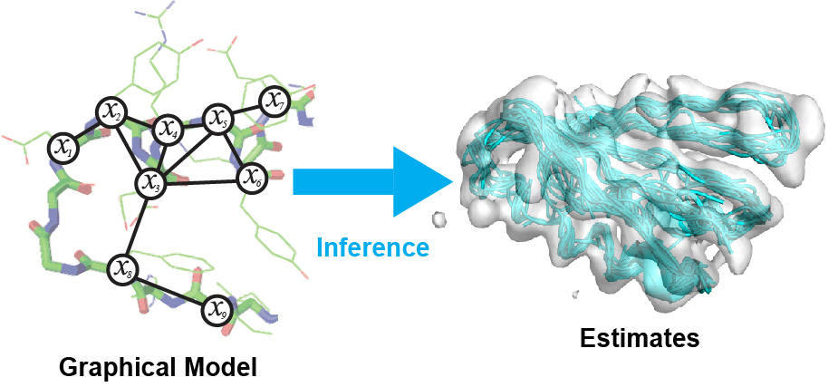

Probabilistic Graphical Models
CSC 535 | Fall 2020 | MW 11am-12:15pm | Syncronous Online


Description of Course
Probabilistic graphical modeling and inference is a powerful modern approach to representing the combined statistics of data and models, reasoning about the world in the face of uncertainty, and learning about it from data. It cleanly separates the notions of representation, reasoning, and learning. It provides a principled framework for combining multiple sources of information, such as prior knowledge about the world, with evidence about a particular case in observed data. This course will provide a solid introduction to the methodology and associated techniques, and show how they are applied in diverse domains ranging from computer vision to computational biology to computational neuroscience.
Textbooks
All reading material will be made available through presentation slides or the course webpage. Students will find the following optional textbooks useful throughout this course:
Murphy, K. "Machine Learning: A Probabilistic Perspective." MIT press, 2012 ( UA Library )
Note that Bishop's book is freely available to anyone. Murphy's book is available online through the UA library with NetID login.
Instructor and Contact Information:
Instructor: Jason Pacheco, GS 724, Email: pachecoj@cs.arizona.edu Office Hours: Tuesday @ 3-4:30pm (Tucson time) Optional Office Hours:Thursday @ 9-10:30am (Message professor on Piazza at least the day before) D2L: https://d2l.arizona.edu/d2l/home/937505 Piazza: https://piazza.com/arizona/fall2020/csc535 Instructor Homepage: http://www.pachecoj.com
| Date | Topic | Readings | Assignment |
|---|---|---|---|
| 8/24 | Introduction + Course Overview (slides) | Matlab Primer | |
| 8/26 |
Probability Primer (Part I) (slides: 1-24) |
Murphy: Secs. 2.1 and 2.2 | |
| 8/31 |
Probability Primer (Part II) (slides: 25-42) |
Murphy: Secs. 2.3 - 2.5 Bishop: Secs. 2.1 - 2.3.2 |
HW1 (Due: 9/9) |
| 9/2 |
Probability Primer (Part III) (slides: 43-end) Bayesian Probability and statistics (Part I) (slides) |
Murphy: Secs. 3.1-3.2 Bishop: Sec. 1.2 |
|
| 9/7 | Labor Day - No Class | ||
| 9/9 |
Bayesian Probability and Statistics (Part II) (slides) |
Murphy: Secs. 3.3-3.5 | |
| 9/14 |
Probabilistic Graphical Models (Part I: Directed) (slides: 1-49) |
Murphy: Secs. 10.1-10.2 Bishop: Secs. 8.1-8.2 |
|
| 9/16 |
Probabilistic Graphical Models (Part II: Undirected) (slides: 50-end) |
Murphy: Secs. 19.1-19.4 Bishop: Sec. 8.3 |
HW2 (Due: 9/30) |
| 9/21 |
Message Passing Inference (Part I: Variable Elimination) (slides: 1-44) |
Murphy: Sec. 20.3 Bishop: Sec. 8.4.1 |
|
| 9/23 |
Message Passing Inference (Part II: Sum-Product Belief Propagation (BP)) (slides: 46-89) |
Murphy: Secs. 20.1-20.2 Bishop: Secs. 8.4.1-8.4.4 |
|
| 9/28 |
Message Passing Inference (Part II: Sum-Product BP Cont'd) (slides: 46-89) |
||
| 9/30 |
Message Passing Inference (Part III: Max-Product / Max-Sum BP) (slides: 90-109) |
Bishop: Sec. 8.4.5 | |
| 10/5 |
Message Passing Inference (Part IV: Junction Tree Algorithm) (slides: 109-131) |
Murphy: Sec. 20.4 | HW3 (Due: 10/19) Handout Code: Factor Graph, LDPC |
| 10/7 |
Message Passing Inference (Part V: Loopy Belief Propagation) (slides: 131-end) |
Murphy: Sec. 22.2 | |
| 10/12 |
Parameter Learning (Part I: MLE, MAP) (slides: 1-28) |
Murphy: Ch 7 Bishop: Ch 3 |
|
| 10/14 |
Parameter Learning (Part II: Expectation Maximization) (slides: 30-) |
Murphy: Ch 11 Bishop: Ch 9 |
|
| 10/19 |
Parameter Learning (Part II: EM Cont’d) (slides: 30-) |
||
| 10/21 |
Dynamical Systems (Part I: Sequence Models) (slides: 1-54) |
Murphy: Ch 17 Bishop: Ch 13 |
|
| 10/26 |
Midterm Review (slides) |
Midterm Exam | |
| 10/28 |
Dynamical Systems (Part II: Kalman Filter) (slides: 55-72) |
Murphy: Ch 18 Bishop: Sec. 13.3 |
|
| 11/2 |
Dynamical Systems (Part II: Nonlinear & Switching Dynamical Systems) (slides: 73-) |
Murphy: Sec. 18.6 (Switching State-Space) Bishop: Sec. 13.3 |
|
| 11/4 |
Monte Carlo Methods (Part I: Monte Carlo Inference) (slides: 1-31) |
Murphy: Sec. 23.1-23.4 Bishop: Sec. 11.1 |
HW4 (Due: 11/16) Handout Code: LDS |
| 11/9 |
Monte Carlo Methods (Part II: Sequential Monte Carlo) (slides: 32-59) |
Murphy: Sec. 23.5 | |
| 11/11 | Veterans Day - No Class | ||
| 11/16 |
Monte Carlo Methods (Part III: Markov Chain Monte Carlo) (MCMC slides) (Monte Carlo Slides) |
Murphy: Sec. 24.1-24.3 Bishop: Sec. 11.2-11.3 |
|
| 11/18 |
Monte Carlo Methods (Part III: MCMC Cont'd) (MCMC slides) (Monte Carlo Slides) |
Murphy: Sec. 24.1-24.3 Bishop: Sec. 11.2-11.3 |
|
| 11/23 |
Monte Carlo Methods (Part III: MCMC Cont'd) (MCMC slides) (Monte Carlo Slides) |
Murphy: Sec. 24.1-24.3 Bishop: Sec. 11.2-11.3 |
HW5 (Due: 12/7) Handout Code: LDS, Stochastic Block Model, valid_RandIndex.m |
| 11/25 |
Exponential Families ( slides ) |
Murphy: Sec. 9.1-9.2 Bishop: Sec. 2.4 |
|
| 11/30 |
Variational Inference (Part I: Variational Methods) ( slides ) |
Murphy: Sec. 21.1-21.2 | |
| 12/2 |
Variational Inference (Part II: Mean Field Variational) ( slides ) |
Murphy: Sec. 21.3 | |
| 12/7 |
Variational Inference (Part II: Stochastic Variational) ( slides ) |
||
| 12/9 | Last Class: Wrapup | ||
| 12/14 | Final Exam |